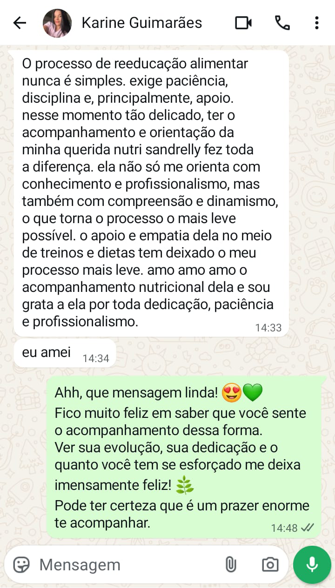

Nutrição clínica em todas as fases da vida
Atendimento nutricional personalizado para crianças, adolescentes, adultos e idosos, com foco na promoção da saúde, prevenção de doenças e equilíbrio alimentar em cada etapa da vida.
Acompanhamento clínico, reeducação alimentar e planos práticos que se encaixam na sua rotina.
Atendimento individualizado e baseado em evidências.
Atendimento nutricional personalizado para crianças, adolescentes, adultos e idosos, com foco na promoção da saúde, prevenção de doenças e equilíbrio alimentar em cada etapa da vida.
Planejamento nutricional individualizado para a perda de peso de forma equilibrada, promovendo mudanças sustentáveis nos hábitos alimentares e melhoria da qualidade de vida.
Acompanhamento voltado para o início da alimentação dos bebês e o cuidado nutricional na infância, promovendo hábitos saudáveis desde cedo.
"A Dra. Sandrely não só me ajudou a ter uma boa alimentação, mas também a mudar a mentalidade para uma mudança de vida."
"Ela não só me orienta com conhecimento e profissionalismo, mas também com compreensão e dinamismo, o que torna o processo o mais leve possível."
Agende sua avaliação inicial com facilidade via WhatsApp.
Agendar via WhatsAppTelefone/WhatsApp: (81) 98438-0843
Endereço: Av. Senador Nilo de Souza Coelho, n°05 — Aguazinha, Olinda-PE